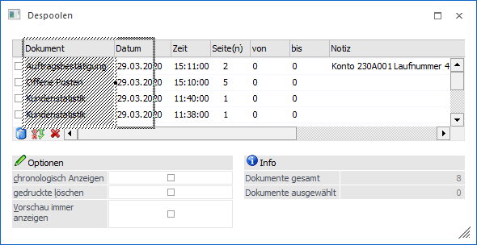
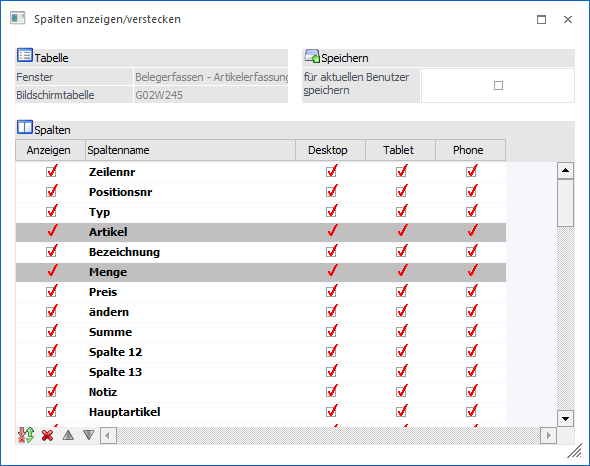
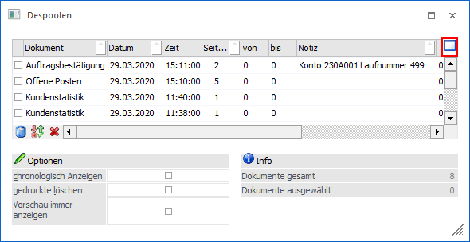
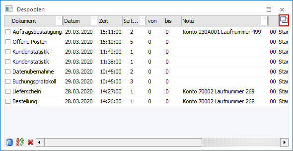
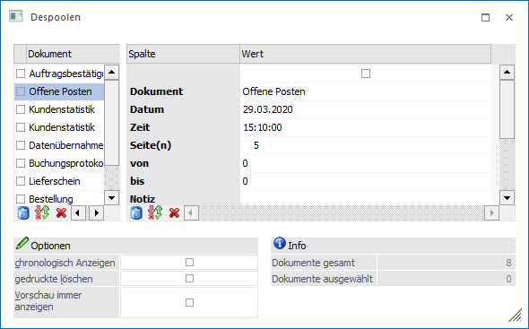
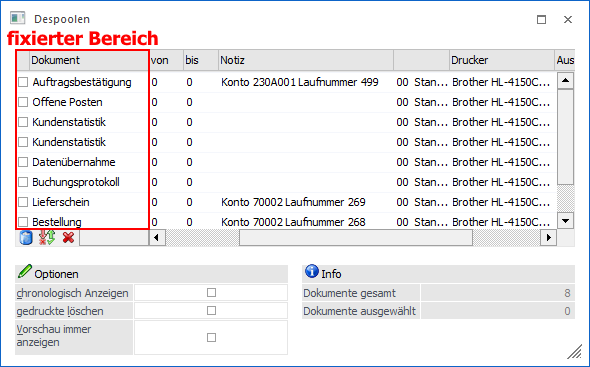

Folgende Änderungen können am Tabellenlayout vorgenommen werden:
Ø Verändern der Spaltenbreite
Die einzelnen Spalten sind mit Begrenzungslinien versehen. Wird der Mauszeiger über eine Begrenzungslinie geführt, so ändert sich der Mauszeiger in einen zweispitzigen Pfeil. Dieses ist das optische Kennzeichen, dass die Spaltenbreite verändert werden kann (ändert sich der Mauszeiger nicht, so kann in der Tabelle auch keine Veränderung vorgenommen werden). Wird nun die linke Maustaste gedrückt, so wird um die gesamte Spalte ein Rahmen angezeigt und die Spaltenbreite kann verändert werden.

Ø Verschieben von Spalten
In vielen Tabellen können die Reihenfolge der Spalten (und damit auch die Reihenfolge der Eingabe) selbst bestimmt werden. Wird eine Spaltenüberschrift mit der linken Maustaste angewählt, so ändert sich der Mauszeiger zu einem vierspitzigen Pfeil. Dieses ist das optische Kennzeichen, dass die Spalten verschoben werden können (wird der vierspitzige Pfeil nicht angezeigt, so kann in der Tabelle auch keine Änderung vorgenommen werden). Bleibt nun die linke Maustaste gedrückt, kann die Spalte an eine beliebige Position verschoben werden. Durch das Auslassen der Maustaste wird die Spalte dann an der gewünschten Stelle eingefügt.
Hinweis
Zusätzlich können Tabellenspalten automatisch in eine optimale Spaltenbreite versetzt werden. Dieses kann mit dem Spalten-Kontexteintrag "Optimale Spaltenbreite" durchgeführt werden.
Ø Spalten anzeigen/verstecken
Bei bestimmten Tabellen (z.B. Belegerfassungstabelle oder Ergebnisstabelle des Artikelmatchcodes) können Spalten versteckt bzw. weitere Spalten anzeigt werden. Die Definition erfolgt über das Programm "Spalten anzeigen/verstecken", welches über das Kontextmenü der rechten Maustaste (Funktion "Spalten anzeigen/verstecken") aufgerufen werden kann.

Hinweis
Nähere Informationen entnehmen Sie bitte dem Kapitel Spalten anzeigen/verstecken).
Ø Tabellengröße verändern /
Sehr viele Tabellen können temporär auf die Größe des gesamten Fensters maximiert werden.
ü Tabelle in Fenstergröße
Mit
Hilfe des Buttons , welcher angezeigt
wird, wenn man mit der Maus auf die Tabellenüberschriften fährt, der Taste F7
oder über das Kontextmenü der rechten Maustaste (Funktion "Tabelle in
Fenstergröße") kann die Tabelle auf Fenstergröße maximiert werden.

ü Tabelle in Normalgröße
Mit
Hilfe des Buttons , welcher angezeigt
wird, wenn man mit der Maus auf die Tabellenüberschriften fährt, der Taste F7
oder über das Kontextmenü der rechten Maustaste (Funktion "Tabelle in
Fenstergröße") kann die Tabelle wieder auf Normalgröße verkleinert
werden.

Ø Gestürzte Darstellung
Über das Kontextmenü der rechten Maustaste (Funktion "Gestürzte Darstellung (ALT F7)") bzw. der Tastenkombination ALT + F7 kann die gestürzte Tabellendarstellung aktiviert bzw. deaktiviert werden. Hierdurch wird eine 2 Tabelle erzeugt, in welcher die Informationen der aktiven Zeile (1 Tabelle) vertikal dargestellt werden.
Achtung
Diese Funktion steht nur zur Verfügung, wenn in der Tabelle die sogenannte Suchzeile nicht aktivierbar ist und in der Tabelle mehr wie 3 Spalten existieren.

Hinweis
Diese Einstellung wird automatisch benutzerspezifisch gespeichert.
Ø Spalten fixieren
Mit der Kontextmenü-Funktion "Spalten fixieren" (rechte Maustaste) kann eine Spalte in der Tabelle "festgestellt" werden. D.h. alle Spalten, die links von der fixierten Spalte stehen, werden - auch wenn in der Tabelle gescrollt wird - nicht bewegt. Ebenfalls über das Kontextmenü der rechten Maustaste kann die Fixierung wieder aufgehoben werden (Funktion "Spaltenfixierung entfernen").
Beispiel
Im Despooler soll der Name des Eintrags immer ersichtlich sein. Über die rechte Maustaste wird auf dieser Spalte die Fixierung aktiviert.
